2019 유라시아 일주 - 아름다운 이르쿠츠크를 떠나 노보시비르스크로
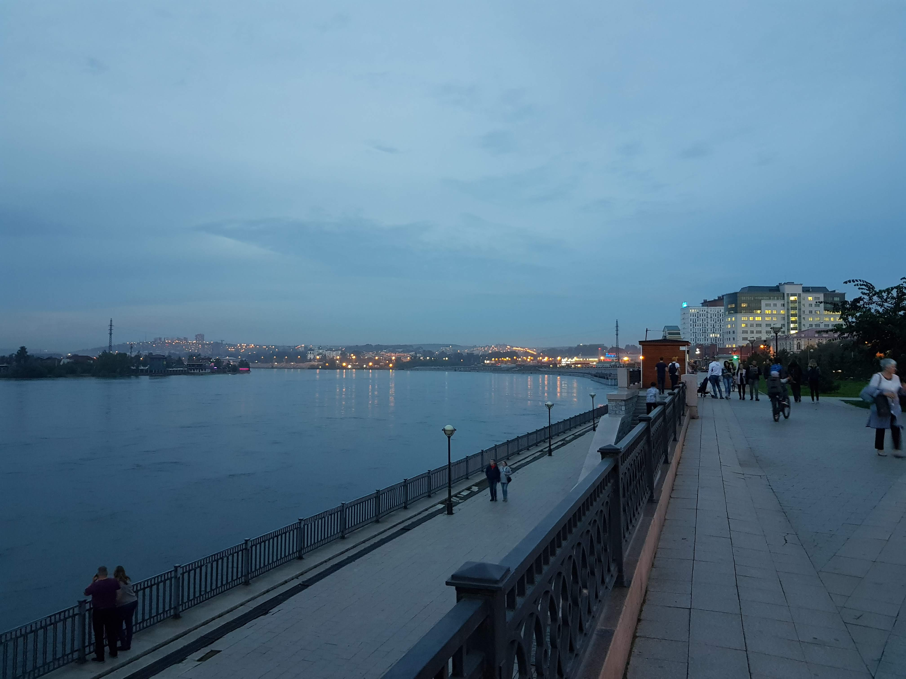
Figure 1: 이르쿠츠크의 앙가라 강
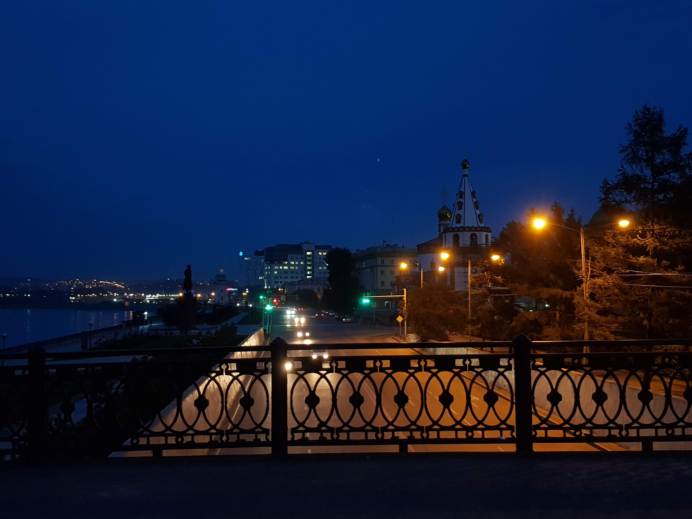
Figure 2: 이르쿠츠크의 야경
이르쿠츠크
9월 4일, 바이칼 호수 투어를 마치고 이르쿠츠크로 돌아온 승민이와 나. 에어비엔비 숙소 위치가 헷갈려서 같은 곳을 계속 빙빙 돌았다.
배낭을 매고 계속 걷고 있으면 정말 이만한 고생이 없다. 호스트를 가까스로 만난 뒤에야 숙소에 짐을 풀 수 있었다. 사실 지도에 위치가 제대로 나와있지 않아서 짜증이 조금 난 상태였다. 나중에는 건물 찾는 데 익숙해지긴 했지만 우리나라처럼 건물 구획이 제대로 되어 있는 나라는 거의 없다. 결국 여행자의 경험으로 해결할 일이다.
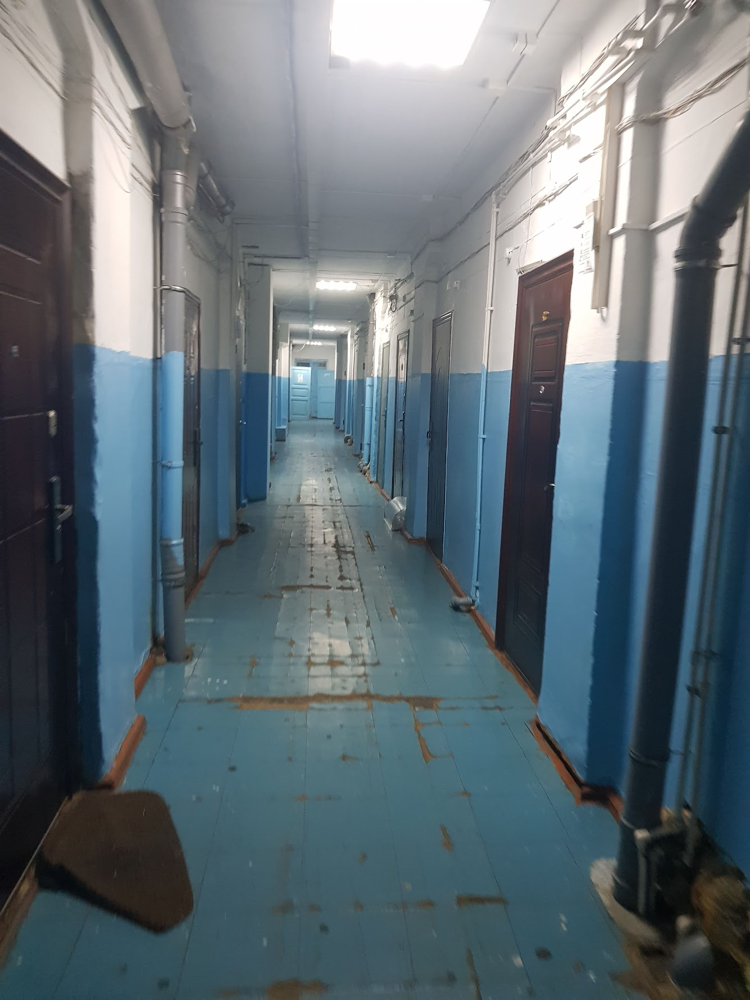
Figure 3: "aisle of apartments"
우리가 들어간 숙소는 옛 소련의 느낌이 아직도 남아있는 아파트였다. 만화에나 나올 법한 커다란 철제 열쇠와 열쇠 구멍. 그래도 내부는 투숙객을 받기 위해 보수를 한건지 깔끔했다.
우리는 이르쿠츠크에서 시간을 보내면서 다음 행선지인 노보시비르스크로 가는 기차를 기다릴 예정이었다. 여행자가 새로운 곳에서 시간을 보내는 가장 좋은 방법은 걷는 것이다. 사실 수입이 없는 여행자는 돈을 아끼는 게 생명인지라 걷는 것 외에 딱히 방법이 없는 것도 사실이다. 돈을 마구잡이로 쓰다보면 여행을 길게 할 수 없기 때문이다. 가지고 있는 돈으로 최대한 여행을 길게 하려면 아끼고 아끼는 수 밖에 없다. 이국의 길거리를 걸으며 그곳의 문화를 차근차근 느낄 수 있는 것은 덤이다.
우리는 이르쿠츠크 시내에 나와 무작정 걸으며 아름다운 모습을 카메라에 담았다. 이르쿠츠크에는 아름답게 설계된 것같은 풍경이 많이 보였다. 마치 어떤 건축가가 의도한 것과 같이 그림과 같은 구도가 많이 보였다. 이르쿠츠크는 바이칼 호수를 보기 위해 들리는 곳이라고만 생각하기엔 너무 아름다운 도시였다.
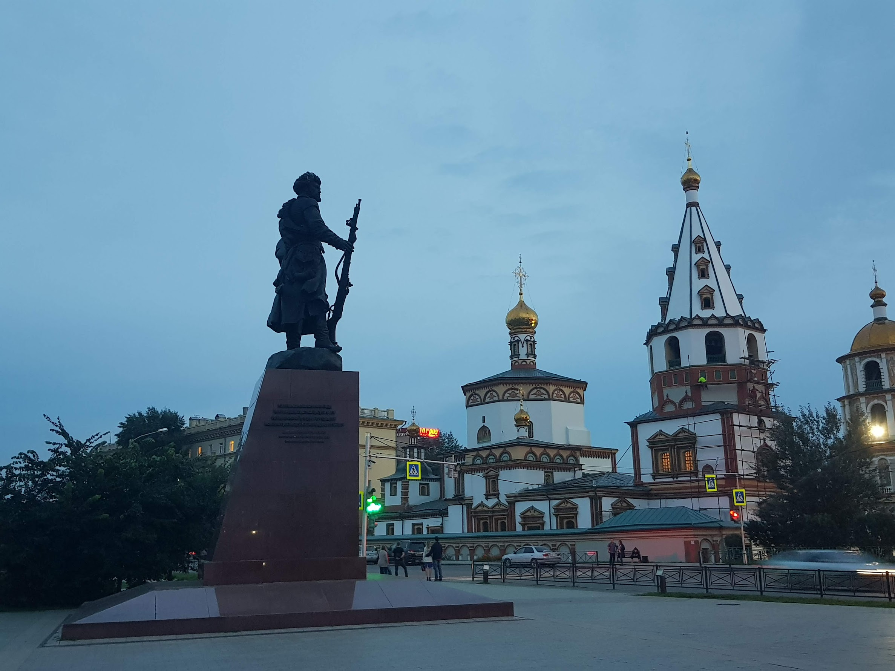
Figure 4: "코자크 동상"
To the Founders of Irkutsk, From the Citizens
이르쿠츠크를 개척한 사람들에게, 시민들로부터
코자크 군인의 모습을 한 동상 옆에는 이렇게 적혀있었다. 러시아의 시베리아 지방은 16세기부터 러시아 사람들이 모험과 개척을 통해 얻은 땅이다. 시베리아 지방의 도시들을 가면 이런 모험과 도전 정신을 기리는 동상을 많이 볼 수 있다. 이 때 개척을 시작했던 사람들이 바로 코사크 사람들인데 이르쿠츠크 앙가라 강 바로 옆에는 이렇게 늠름한 코사크 동상이 하나 세워져있다. 개척자의 옷과 총을 들고 있는 동상과 아름다운 건축 양식을 뽐내는 이르쿠츠크의 건물이 서로 대비된다.
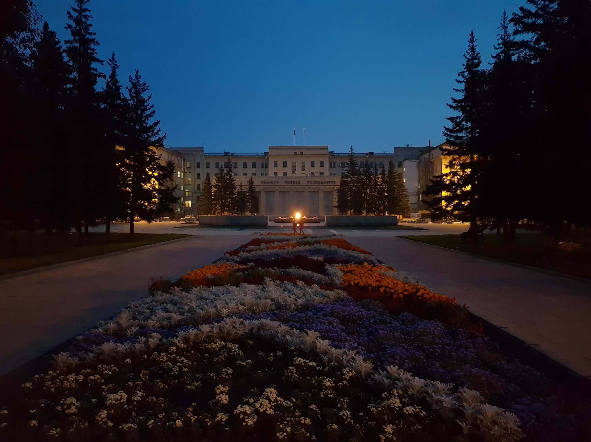
Figure 5: 꺼지지 않는 불꽃
러시아의 도시를 다니다보면 자주 볼 수 있는 꺼지지 않는 불꽃이다. 블라디보스토크에서도 볼 수 있다. 영원의 불꽃이라고도 하는데, 2차대전에서 희생된 영혼들을 추모하는 장소다. 내가 타고 여행하고 있는 시베리아 횡단 철도도 2차대전 당시에는 시베리아에 있는 군인들을 동부전선으로 보내기 위해 사용했을 텐데 기분이 조금 묘하다.
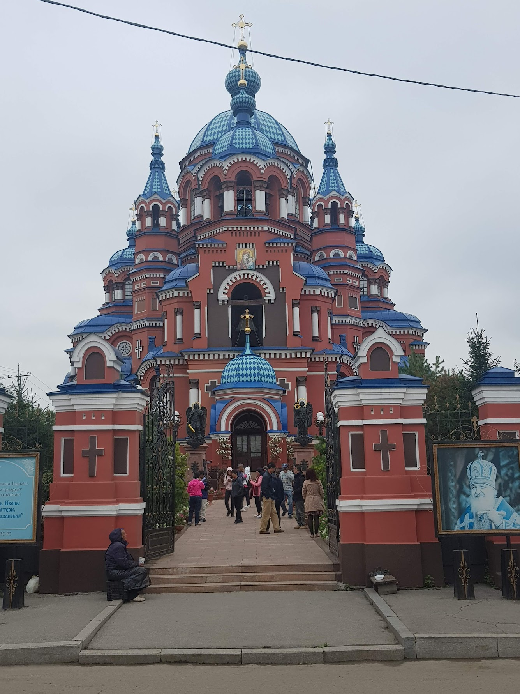
Figure 6: "caption string"
이르쿠츠크에 있는 카잔 성당. 날씨가 좋았더라면 더 아름답게 담을 수 있었을 텐데. 이르쿠츠크를 방문한 많은 방문객들을 볼 수 있었다.
이르쿠츠크를 돌아다니기 위해 트램을 이용을 이용하기도 했는데 다행히도 구글맵이 노선을 잘 찾아줬다. 외관으로 잘 구분도 안가는 트램을 잘 알고 있는 구글맵이 참 신기했다. 딱 봐도 낙후된 곳이 많아서 구글맵 정보가 업데이트 돼 있지 않을까봐 구글맵을 처음에는 잘 안 믿었지만 나중에는 완전히 신뢰하게 됐다. 트램은 승차하고 자리에 앉아있으면 검표원이 와서 직접 계산을 해준다. 솔직히 대중교통을 이용하는 승객 입장에서는 우리나라처럼 직접 카드를 찍고 타는 것보다 편했다. 다만 도로 위에 있으면 올라오는 매캐한 매연 냄새에 머리가 어지럽기도 했고 낡은 도로 상태와 차량 때문인지 진동이 너무 심해서 대중교통을 이용하는 게 썩 즐겁지는 않았다.
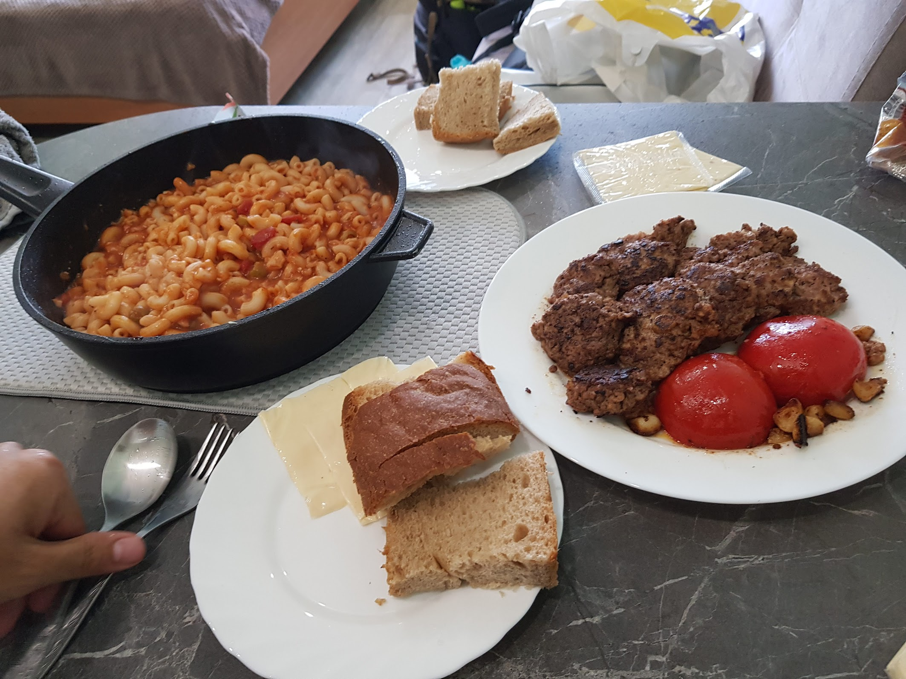
마카로니 파스타. 소고기 패티. 빵과 치즈. 요리실력이 늘고 있다. (한 번에 해먹는 메뉴의 가짓수가 늘고 있다.)
에어비엔비나 게스트하우스를 이용하면 주방을 쓸 수 있는데, 배낭여행을 할 때는 자주 이용하는 게 좋다. 팬이나 냄비, 수저, 포크는 숙소에 다 구비가 되어 있어서 따로 들고다닐 필요없이 재료만 구하면 된다. 그래도 취사도구가 숙소에 없으면 낭패를 보니 숙소를 예약하기 전에 잘 살펴보는 게 좋다.
주변에 있는 슈퍼마켓에 가보면 한두끼 먹을 마카로니는 한봉지에 천원도 안하는 가격으로 구할 수 있다. 이것저것 담아도 한끼에 삼사천원 정도로 해결할 수 있다. 육류나 고급재료를 구하면 좀 더 들겠지만 그렇게 부담되는 가격은 아니다. 하루 세끼 모두 식당에서 해결하는 것도 번거롭고 돈도 많이 들기 떄문에 우리같은 배낭여행자는 이렇게 직접 해먹는 게 양도 많고 돈도 절약할 수 있는 방법이다. 만약 배낭여행을 준비하고 있다면 간단한 요리레시피를 잘 익혀두고 가자.
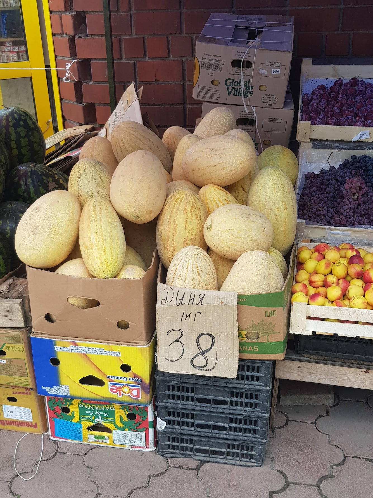
Figure 7: "이르쿠츠크 중앙시장의 메론"
Дыня(디냐). 메론이라는 뜻이다. 38루블. 당시 환율로 700원, 지금 환율로 600원 정도한다. 음식이 정말 싸다.
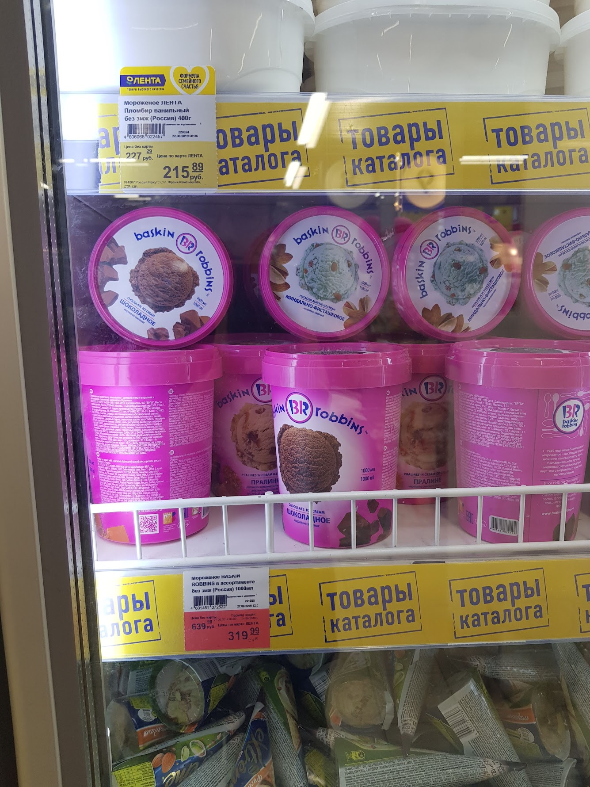
이르쿠츠크에서 발견한 신기한 아이스크림. 한국에서는 본 적이 없는 배스킨 라빈스 통 아이스크림이다. 이르쿠츠크에는 체인점은 없고 이런식으로 배스킨 라빈스 아이스크림을 접할 수 있다.
노보시비르스크로
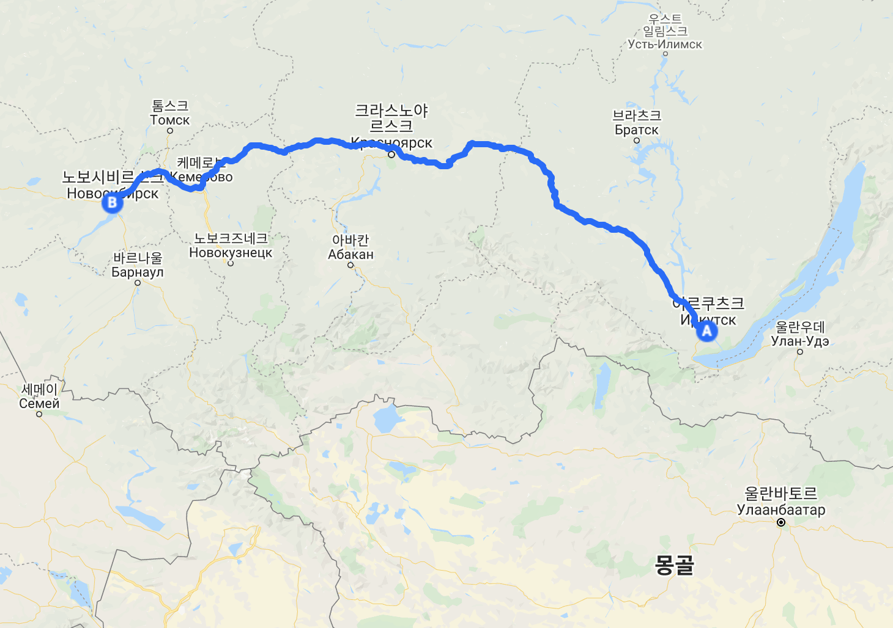
Figure 8: "route.png"
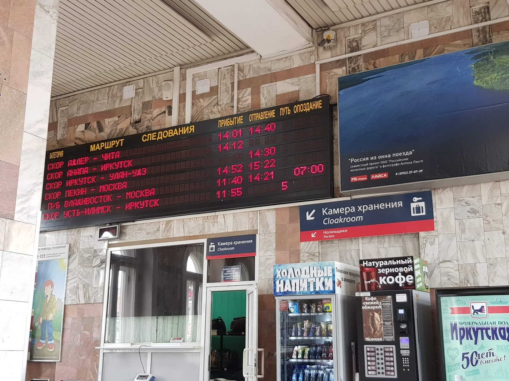
Figure 9: "irkutsk-station.jpg"
이르쿠츠크도 떠날 시간이 다가왔다. 다음 행선지는 노보시비르스크다. 기차로 하루정도 걸리는 거리다. 블라디보스토크에서 이르쿠츠크까지 기차안에서 인터넷없이 3일동안 버텨봤기 떄문에 이정도는 어렵지 않을 거라 생각했다. 경험치가 조금 쌓인 기분이었다.
그래도 전광판에 올라오는 7시간짜리 기차 지연(Опоздание)은 아찔해보였다. 다행히 내가 탈 기차는 아니었지만 만약저게 내 기차였다면.. 생각하기도 싫다.
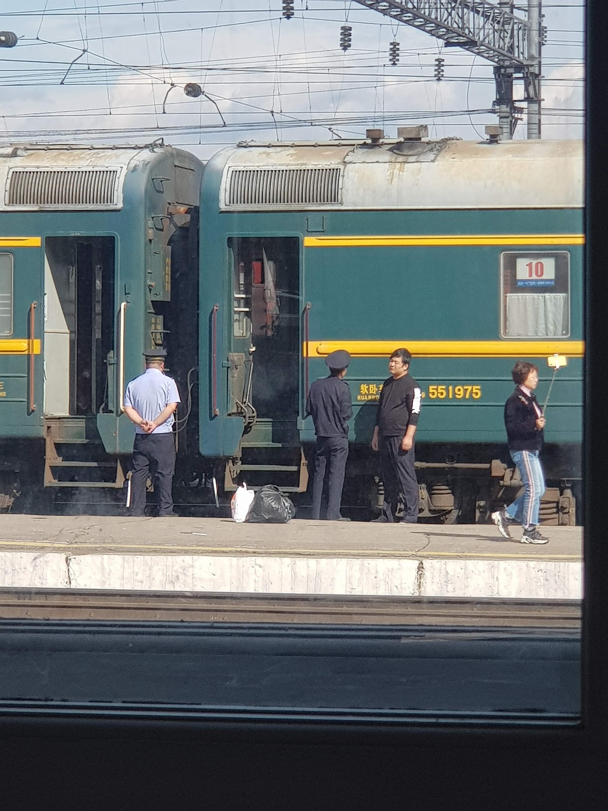
Figure 10: 중국에서 온 기차
이르쿠츠크는 중국과도 철도로 연결되어 있는 지 중국에서 온 기차도 보였다. 기차에 보이는 중국어가 눈에 띄었다. 우리가 탄 기차보다 많이 낡아보였다.
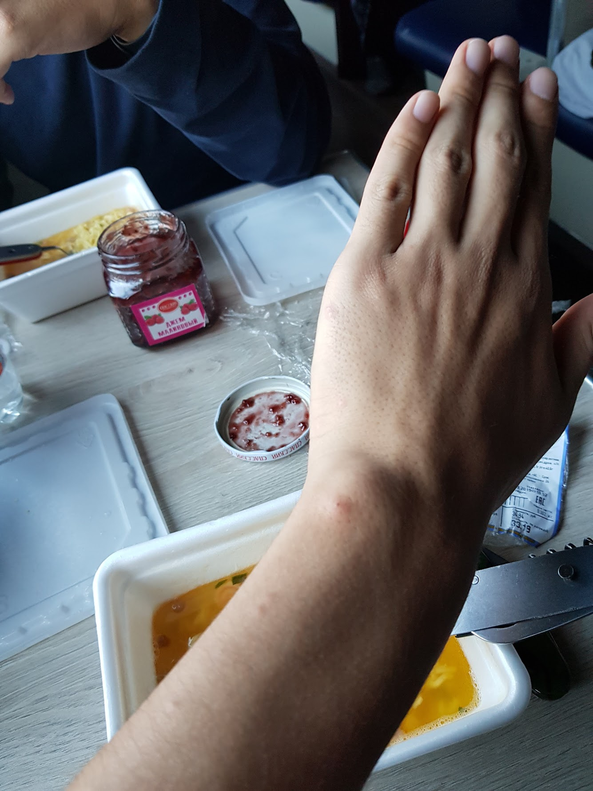
기차에 타고 식사를 하는데 팔에 뾰루지같은 게 올라와서 사진을 찍었다. 마시는 물이 달라져서 그런건지, 벌레에 물린건지 알 수가 없었다. 다행히 시간이 지나고 나아지기는 했지만 조금 식겁했다. 여행중에 아프거나 다치면 딱히 방법이 없기 때문이다. 몸이 건강하기를 바랄 수 밖에 없다.
내 팔 뒤로는 빵에 발라먹는 잼과 도시락 라면이 보인다. 기차 탈 떄는 빵이랑 라면을 주로 먹었다.
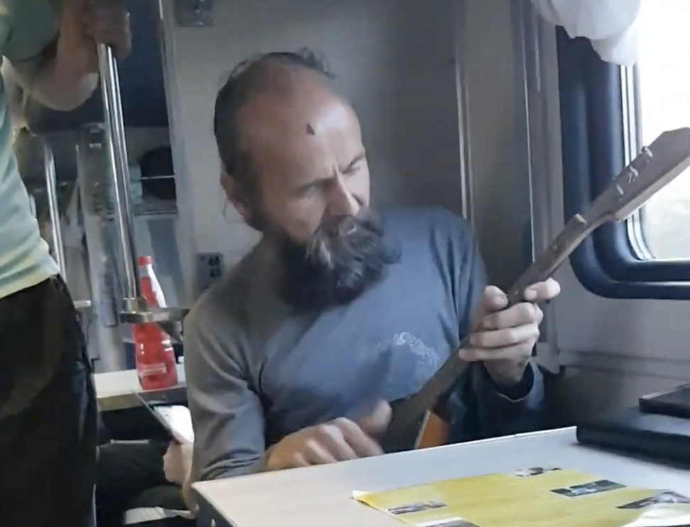
Figure 11: 기차에 탄 발랄라이카 음악가
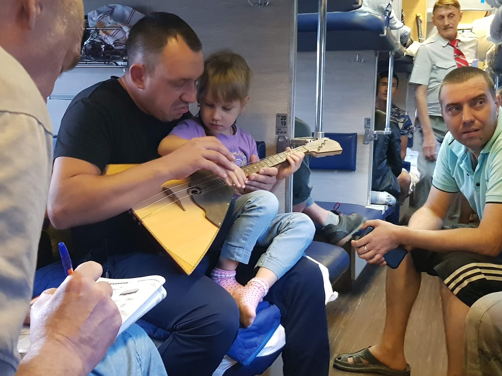
노보시비르스크로 가는 길에 발랄라이카(기타처럼 생긴 카자흐스탄 민속악기)를 들고 자리를 잡은 승객이 있었는데 갑자기 객실 안에서 콘서트를 하기 시작했다. 내 자리에서 아주 가까운 곳이었는데 사람들이 금새 모여들었다. 옆 자리 꼬마에게도 발랄라이카를 쥐어주기도 했다. 아버지와 같이 줄을 튕기며 연습하는 모습이 너무 귀여웠다. 이 때 학교에서도 가을 음악축제가 한창이었는데 나도 기차에서 그에 못지 않은 경험을 했다.
{{<bundle-image name="musician-card.jpg" caption="알 수 없는 음악가가 남기고 간 명함이다">}}